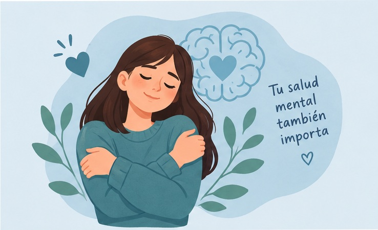
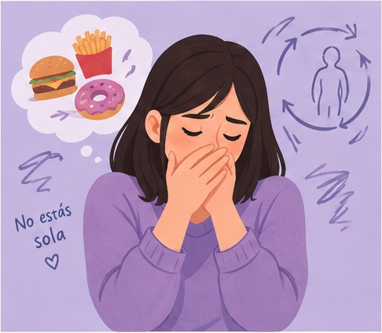
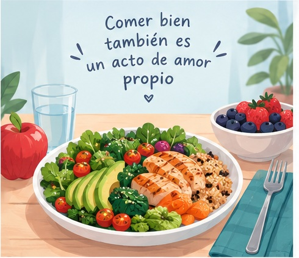

Anorexia nerviosa
Se caracteriza por una restricción importante de la alimentación, un miedo intenso relacionado con el aumento de peso y dificultades en la percepción del propio cuerpo. Puede provocar consecuencias graves para la salud.
Conocer, comprender y prevenir

Los trastornos alimenticios son problemas de salud que afectan la relación de una persona con la comida. Informarnos sobre ellos ayuda a reconocer sus señales, evitar prejuicios y comprender la importancia de pedir ayuda a tiempo.
Los trastornos de la conducta alimentaria son enfermedades que afectan los hábitos alimentarios, las emociones y la salud física y mental. No son simplemente una elección personal ni un capricho.
Pueden presentarse en personas de diferentes edades y contextos. Cada persona vive una experiencia distinta, por lo que es importante evitar las comparaciones y los comentarios que puedan causar vergüenza o sufrimiento.
Estos trastornos pueden afectar la energía, la concentración, el estado de ánimo y las relaciones sociales. Con atención profesional y apoyo adecuado, es posible avanzar hacia la recuperación.
Se caracteriza por una restricción importante de la alimentación, un miedo intenso relacionado con el aumento de peso y dificultades en la percepción del propio cuerpo. Puede provocar consecuencias graves para la salud.

Puede incluir episodios de pérdida de control al comer seguidos de conductas compensatorias, como el vómito provocado o el uso inadecuado de laxantes. Requiere atención profesional.

Consiste en episodios recurrentes en los que la persona siente que pierde el control al comer. Puede experimentar angustia, culpa o malestar después de estos episodios.
No existe una sola causa. Estos trastornos pueden relacionarse con una combinación de factores biológicos, psicológicos, familiares y sociales.
La ansiedad, la depresión, la baja autoestima y las dificultades para manejar las emociones pueden influir en algunas personas. Sin embargo, no todas las personas experimentan los mismos factores.
Las redes sociales y la presión por alcanzar ciertos ideales de apariencia también pueden afectar la percepción corporal. Es importante recordar que las imágenes publicadas no definen el valor de una persona.
Algunas señales pueden ser preocuparse demasiado por la comida, sentir culpa al comer, evitar comidas con frecuencia o mostrar cambios importantes en los hábitos alimentarios.
También pueden aparecer aislamiento social, irritabilidad, ansiedad, cansancio o preocupación constante por el cuerpo y el peso.
Una señal por sí sola no confirma un trastorno. Si existe preocupación, lo adecuado es hablar con un profesional de la salud que pueda evaluar la situación.
Promover una relación saludable con la comida significa respetar las necesidades del cuerpo, evitar las dietas extremas y no juzgar a las personas por su apariencia.
Escuchar sin criticar, hablar con alguien de confianza y buscar orientación de profesionales de la salud son pasos importantes. La recuperación es posible y nadie tiene que enfrentar esta situación a solas.
Si tú o alguien cercano necesita ayuda, pueden acudir a un médico, psicólogo, orientador escolar o adulto de confianza.
Los trastornos alimenticios son problemas de salud que merecen comprensión, respeto y atención. Informarse, reconocer las señales y buscar apoyo profesional puede marcar una diferencia. La salud y el bienestar son más importantes que cumplir con un ideal de apariencia.